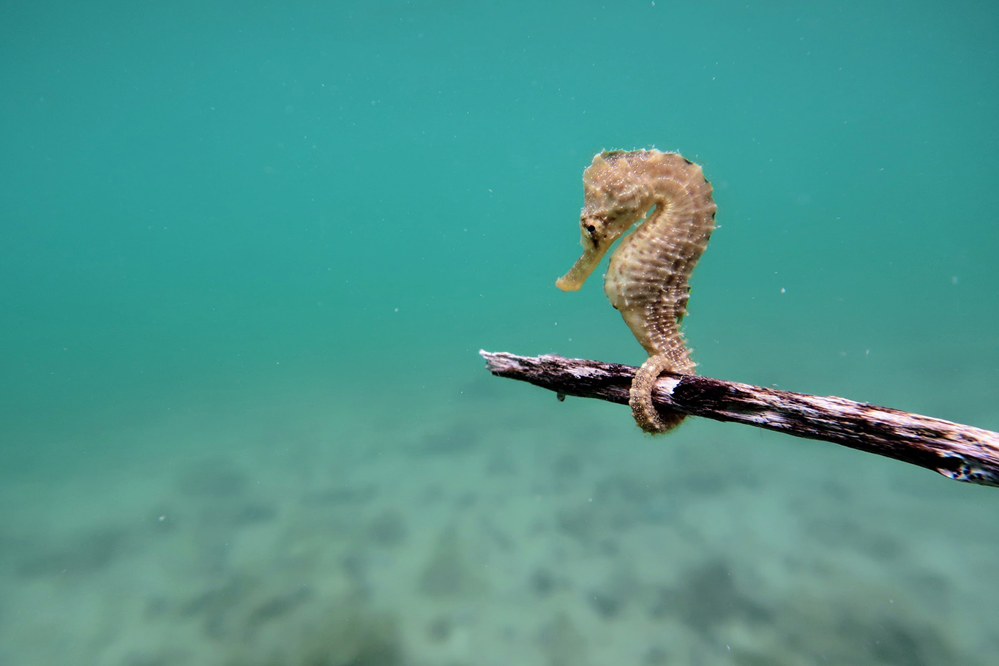

Where Do I live?
I was born in France, and lived in many countries. The Bahamas have been my home since 2009.
Fun when not working
Diving is what I like to do for fun when not working.
My hobby
Photography has been my hobby for many years, I love the creativity the it offers.